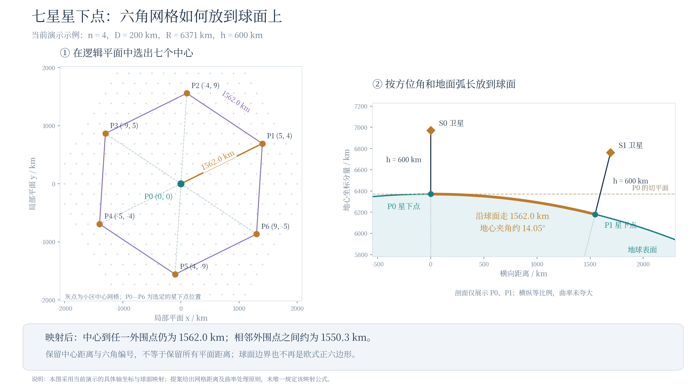

卫星位置
参考星加六个邻星；用六角逻辑位置与真实地面偏移确定星下点，再建立各星局部坐标。
进入这一部分 →先建立宽小区和七星复制关系，再把地面边界映到方向余弦平面，用 k、g 生成窄束并为 UE 选择服务束。
先有地面宽小区尺度，才能确定邻星复制位置；再把宽小区边界映到 UV 并填充窄波束，最后在宽小区内撒 UE、选束和筛选干扰。
参考星加六个邻星；用六角逻辑位置与真实地面偏移确定星下点，再建立各星局部坐标。
进入这一部分 →地面宽小区定义服务与撒点区域；UV 窄束负责实际方向，以 k、g 控制间距、边缘扩展和窄束归属。
进入这一部分 →区域与分区的衔接说明 ↓UE 按宽小区撒点并选择关联窄束；按 W 或全量方式保留邻星，再应用小区、活动和资源规则。
进入这一部分 →模块 01 / 02 / 03 对应总览中的三个问题；阅读步号按本方案的输入依赖排列。前一步的输出，交给后一步继续计算。
先排逻辑网格，再确定七个星下点；球面模式用三维旋转复制各星局部布局。
2.1映射宽小区轮廓；2.2用k、g排窄束，再按UV最近中心归属并计数。
W 先筛邻星，再结合干扰小区、激活和频率复用形成发送链路。
先确定逻辑网格，再建立球面位置，最后复制各星局部坐标。六角编号、真实地面距离与 UV 方向余弦分别承担不同任务。
| 问题 | 高通 §11.1 的原则 | 本页采用的具体实现 |
|---|---|---|
| 七个中心怎么选？ | 参考星加六邻星；邻星中心六角距离为 2n+1，星下点按真实地面距离偏移。 | n=4、D=200 km。取 (5,4) 及其 60° 旋转副本；d_hex=9，L=200√61≈1562.0 km。 |
| 何时计入曲率？ | 是否考虑地球曲率由评估方报告；采用曲率时，局部坐标必须随星下方向旋转。 | 从 P0 沿指定方位走大圆弧长 L。α=L/R，gⱼ=R(cosα·n₀+sinα·tⱼ)，然后 rⱼ=(R+h)gⱼ/R。平面近似则直接平移。 |
| 哪些距离保留？ | 原文未展开唯一的地图投影或球面网格生成公式。 | 保留参考中心到各点的距离与初始方位；不保留所有点间距离。默认球面中心到外围为1562.0 km，相邻外围点约1550.3 km。 |
| 各星布局如何复制？ | 各星在自己的局部坐标中携带相同布局；用最小旋转映射星下方向，不额外绕星下方向自转。 | 旋转复制参考星的地面位置与天线坐标；同一束局部 (u,v) 相同，但对同一个 UE 的距离和偏离角分别计算。 |
可以保留六角编号、圈数和六邻接关系，也可以定义球面六边区域。不能把所有平面距离、欧式正六边形形状和无缝铺砌同时原样保留到球面。
若将共享边界一起映射，可保持区域拼接；不同位置的形状和尺度会发生变化。
保持各星携带的局部布局相同；不同星之间的边缘未必严丝合缝，可能重叠或出现空隙。本页按这一思路扩展各星布局。
W 使用逻辑六角距离筛选邻星；链路的斜距、仰角和天线偏离角使用实际三维坐标。区域卫星数7不等于轨道面数7。这一固定布局没有轨道面数、每轨道卫星数、轨道相位或时间传播；研究轨道数影响时，应由真实星座位置替代这套固定七星位置，继续复用后续局部波束和干扰计算。

原文定位：Proposal 11.1-1（宽小区、曲率报告）、Proposal 11.1-2（邻星位置与布局复制）、Fixed Beam-Layout（地面到 UV 的逐顶点映射）。方位等距映射的距离与形变性质 ↗
Qualcomm R1-2608437 第 11.1 节，Proposal 11.1-1 / 11.1-2；固定波束部分及 Figures 11.1-1–11.1-5。原文提供固定波束与 UE 专用波束两种选项，本页主线采用固定波束，下行链路为干扰计算示例。宽小区内均匀撒 UE；调度可逐小区独立，也不排除跨小区联合调度。
本页宽小区先在逻辑平面按等中心距六角网格生成，再映射到地球表面；随后逐顶点映射到卫星局部方向余弦平面。这里 u、v 是两个横向方向分量，星下方向为 (0,0)；这里不采用经纬度归一化坐标。本页球面布局由平面网格经球面指数映射生成，即保留参考中心到各点的方位和弧长；不同时保留所有点间距离、角度与面积。投影和射线求交使用球形地球。
2.1将地面宽小区的六个顶点逐一映射到UV；一般不保留等边和等角，星下中心小区的对称特例除外。本页以六个UV顶点连成轮廓。2.2沿用这些轮廓，先用k确定整片UV窄波束网格，再用g补整颗星服务区的外缘；最后逐束关联最近的宽小区UV中心，并统计每个小区的关联束数。
示例采用 h=600 km、宽小区中心距 D=200 km、n=4，中心加四圈共61小区。HPBW（Half-Power Beamwidth，半功率波束宽度）取2.82°作数值展开；s=k·2sin(HPBW/2)，保护距离为gs。默认球面配置 k=√3/2、g=0.5生成1303条候选窄波束，与原文 Figure11.1-5的束数一致。改变曲率、k、g会重新生成网格；原图束数不是对所有参数固定的常数。
原文规定六颗邻星的中心距为六角网格距离 2n+1。本页选用轴坐标 (n+1,n) 及其60°旋转副本，再按方位角和大圆弧长放到球面；这一具体嵌入及球面映射属于本页实现。六角网格距离与欧氏距离分开计算，不能直接用9D代替实际距离。球面模型的各星局部坐标使用映射星下方向的最小旋转，无绕星下方向的附加自转。各星旋转复制的布局保持局部相同，但不同星之间的地面边界不保证无缝，可能重叠或留有空隙。
W 按目标服务小区 c 与邻星中心 z 的网格距离筛选：n+1 ≤ d_hex(c,z) ≤ n+W，W < 2n+1。全量方式则计入六颗邻星的全部激活干扰小区。原文只写筛选后考虑“最近的小区”，未给统一最近小区数量；本页可选每颗保留邻星的全部61小区，或按实际地面中心距离选最近19/7小区，后两者是教学选项。
“每小区1束”以宽小区中心为调度目标选取一条窄波束，对服务小区则选取最接近被测 UE 方向的关联束；“全部窄束候选”用于展示候选集合。三频复用标签为教学映射。真实干扰仍需接入活动时频资源、发射功率、天线方向图与传播模型；本页列出几何与链路集合，不计算提案的SIR曲线。
单星范围 → 中心排布 → 几何分区 → 波束轴与方向图
中心在哪里、UE 属于哪片区域、卫星怎样照射，分别说明。
| 先划地面宽小区 | 宽小区中心、间距与轮廓先给出单星服务区域，也是 UE 撒点与调度的空间对象；一个宽小区可以有多个窄波束。 |
|---|---|
| 再填 UV 窄束并确定归属 | 将宽小区顶点逐一映到 UV；用 k、g 生成候选窄束，再按 UV 中的轮廓、保护区和中心距离确定窄束属于哪个宽小区。 |
| UE 服务束另行选择 | 小区边界决定 UE 的区域归属；在关联窄束中选取服务束。宽小区轮廓、窄束中心和实际 3 dB 功率轮廓分别定义。 |
UE 撒点 → 服务关联 → 活动与资源 → 干扰源筛选 → 逐链路功率 → 分组统计
统计哪些 UE，与保留哪些干扰源分别确定。
| UE 撒点与统计集合 | 在地面宽小区内均匀分布 UE；先选择统计的小区与 UE，再从该小区的关联窄束中确定服务束。 |
|---|---|
| 关联与活动资源 | 原稿保留几何 / 无线距离关联及不同调度选项。固定束示例需明确每小区何时激活哪条窄束和资源。 |
| 干扰源集合 | 可计入全部活动干扰小区，或用六角格距离与 W 筛邻星。页面“最近 19 / 7 小区”属于进一步的演示选择。 |
| 功率与分布 | 对筛出的活动窄束计算接收功率，再逐 UE 汇成 SIR / SINR 与 CDF。页面当前交互输出几何链路；原稿 SIR 曲线独立展示。 |
依据：R1-2608437 · §11.1 / 固定波束示例；原稿设定与页面示例在对应步骤分别标注。
h=600 km、D=200 km、n=4 时，完整服务区域的最远顶点对应约 28.33°。地面网格、最远顶点、球面地心角和 UE 本地仰角的四图推导已移至公共基础。
宽小区布局同时给出地面服务区域及其最低服务仰角。随后将服务区域映射到 UV，以 HPBW、k 确定窄束间隔，按 g 补外缘，再关联到各宽小区并计数。公共基础逐图展示最低仰角的计算。
| 数量 | 怎样确定 | 本页默认示例 |
|---|---|---|
| 每星候选窄束总数 Ncand | 服务区、曲率、卫星高度、HPBW、k、g，以及网格朝向、对齐与边界处理全部确定后，生成保留集合并计数。 | 参考星生成 1303 条。原文规定各星复制同一局部布局，因此这套七星中的每颗星都有相同的候选束数。 |
| 每个宽小区关联束数 Nc | 每条候选束关联到 UV 中心距离最近的宽小区，再按归属计数。每束只归属一个小区。 | 本页复算：中心 C0 关联 55 条，边缘中部 C45 关联 18 条；各小区关联数之和为1303。 |
| 同时激活束数 Nactive(t,f) | 在候选集合中，进一步按载荷并发能力、调度、跳波束与时频复用选择当前发射束。 | 另行配置。1303个候选方向不等于1303束同时发射；本页“每小区1束”等仅为清楚标注的教学选项。 |
完整布局参数 → 保留的候选束集合 B → Ncand=|B| → 各小区归属与 Nc。固定这些输入后，数量不再任意变化；改变输入时重新计算。
七星复制的是同一套局部候选布局，不是七颗星各自独立算出不同的候选总数。如果改成不同高度、不同服务区或不同波束参数，则应分别生成，已属于另一组评估假设。
| k | g | 每星候选束数 |
|---|---|---|
| 1 | 0 | 895 |
| √3/2 | 0 | 1201 |
| √3/2 | 0.5 | 1303 |
此表固定 h=600 km、n=4、D=200 km、R=6371 km、HPBW=2.82°及本页网格对齐方式；数值不随下方控件联动。1303与原文Figure 11.1-5相符，完整数值实现已在文中标注。
依据：Qualcomm R1-2608437 §11.1，Proposal 11.1-1 / 11.1-2，Figures 11.1-1—11.1-5。本文件主线采用固定波束方案；提案还提供 UE 专用波束选项。原文原则、数值实现与教学选项分别标注。地球纹理来自 Natural Earth 公共领域数据。图与交互已内嵌，外部原文链接在联网时使用。